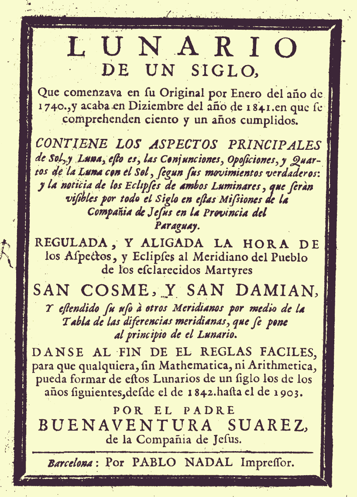
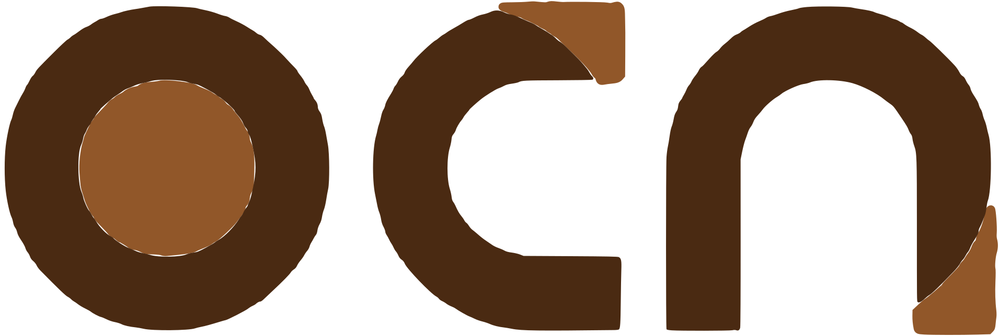

Missões, século XVIII
Telescópios feitos nas Missões mediram o céu.
Arraste

147
eclipses das luas de Júpiter, anotados em 13 anos.
Pelo jesuíta Buenaventura Suárez, com telescópios construídos por artesãos Guarani em San Cosme y Damián.
Fonte: Revista Pesquisa FAPESP n. 327, 2023; Rev. Mex. Física E 57, 2011
Um calendário do céu para cem anos.
Eclipses e fases da Lua de 1740 a 1841, calculados no meridiano de San Cosme y Damián.
Imagem: Buenaventura Suárez, domínio público, via Wikimedia Commons
“
Dados das Missões chegaram à Royal Society.
Eclipses da Lua observados em São Miguel, em 1747, saíram nas Philosophical Transactions de 1749 e 1750.
Fonte: Galindo e Rodríguez-Meza, Rev. Mex. Física E 57, 2011
Antes
Lentes, madeira e mãos Guarani.
Hoje
Satélites e previsão na palma da mão.
33,9%
O céu é de todos. O sinal, ainda não.
É a parte da área agrícola do Brasil com 4G ou 5G (ConectarAGRO, 2025).
Fonte: Teletime, 30/04/2025
Dados do céu que você usa hoje.
Que saber da tua família virou tecnologia?
Conta nos comentários.
A casa da inovação das Missões.
Salve para consultar depois.